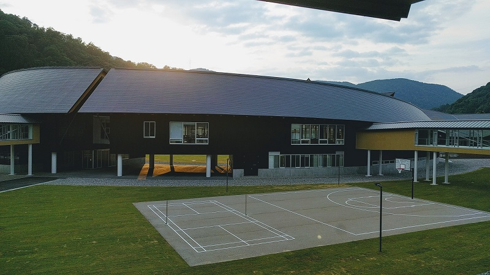

Welcome to my Portfolio
My name is IchP. I came from Thailand,it is the country in Southeast Asia.I am a first year student,and now studying abroad in this
school, International College of Technology,Kanazawa, Japan.
My name is IchP. I came from Thailand,it is the country in Southeast Asia.I am a first year student,and now studying abroad in this
school, International College of Technology,Kanazawa, Japan.
In last summer vacation, we have been assigned to do a project called "STEM Project". It was an individual project, we can choose any topic to be
our project, however, that topic need to be related to STEM; Science, Technology, Engineering, and Mathematics. I chose "Graph Art" to be my topic. This topic relate to Mathematics,
it is about the image that is made by graphing. Graphing each equation make a line, every lines will be graphed to satisfy the place in order to create an image that we are trying to do.
On the last semester, I have created an engineering project with my groups. We analyzed on our school's problems as a group, narrow down problems and then
focus on just one topic. We have to brainstorming on these topics a lot. We have decided to make a "Message board" on a problem: Students didn't get much inforamation
and tend to forget it. Teachers can write homework, or annoucement on a board to notify students.